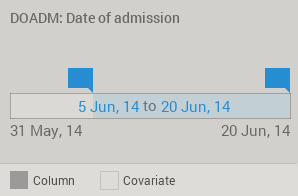

mirador
Data formats
1. Stand-alone tables
Mirador allows the upload of Comma-Separated Values (CSV), and Tab-Separated Values (TSV) files. Tables stored in the Open Document Spreadsheet (ODS) format are supported as well. When selecting these types of files, Mirador will interpret each column as a variable, and each row as an individual data record holding a value for each variable. Missing values are allowed in the table, and identified by the "?" character. When conducting analysis, Mirador will do pairwise deletion of records with missing values. That is, when generating a plot or evaluating the association between variables X and Y, records that have a missing value in either the X column or the Y column will be ignored.
2. Data types
Each column or variable must have specific data types to be properly read by Mirador. The data types supported are the following:
- Category: this type is used to characterize ordinal or nominal variables such as gender, martial status, etc.
- Integer: whole numbers between -2^31 and 2^31 - 1 (-2,147,483,648 and 2,147,483,647)
- Long: whole numbers between -2^63 and 2^63 - 1
- Float: single-precision (32 bit) floating-point values
- Double: double-precision (64 bit) floating-point values
- String: arbitrary sequence of characters, can be used as labels
- Date: date/time strings in an ISO 8601 format, which will be handled as numerical quantities
2. Dictionaries
When loading a stand-alone table file, Mirador will try to guess the types of each column by inspecting its values. This approach works in most cases, but it might fail to assess the correct type in more ambiguous cases, such as when whole numbers are used to represent the different categories of an ordinal variable. In these cases, one can provide an auxiliary dictionary table that explicitly lists the data types for each column. This dictionary can be provided either as a csv or tsv file, and must contain two columns. The first column contains the names of all the variables in the data table, and the second contains the corresponding type, which should be among the following: int, long, float, double, or category. Mirador will automatically load any file called "dictionary.csv" or "dictionary.tsv" located alongside the main table file, and attempt to use it as its dictionary. Several examples are included with the Mirador download, and among them, the "Titanic" one shows how to define a simple dictionary file.
An example of when a dictionary is useful is when one has category variables that are coded in the table. If no additional information is provided, then Mirador will display the codes when labeling the axes, which can be confusing to the user. The mapping between codes and descriptions can be indicated in a third column in the dictionary file. The Titanic example also demonstrates this technique.
3. Codebooks
Sometimes, a less strict specification of types and code mappings could be convenient, for example when most of the types in the table can be accurately inferred from the values, with the exception of a few variables that need to be explicitly described. A codebook will allow for this, and a csv or tsv file will be read automatically if it is found inside the same folder as the main data file and named "codebook.csv" or "codebook.tsv". The "Diabetes 1999-2008" and "Indian Liver Patient" examples provided with the Mirador download uses codebook files and can serve as a reference for the time being.
4. Mirador projects
Finally, more complex datasets often require additional information such as variable groupings, and sample weights (for faster loading times, save the tables in a binary format). To support these scenarios, Mirador offers a custom project format where all the information required to properly display the dataset (table and dictionary files, additional parameters, etc.) can be stored in a .mira file. This file can be selected from the file dialog, and Mirador will parse it and open all the associated files.
5. Data labels
String variables are not loaded into the UI, but they can still be used to attach labels to data points in the scatter view. All that is needed to enable this feature is to include the word "label" in the third column of the corresponding entry for that variable in the dictionary file (when provided).
6. Handling dates
Dates can be stored in a string column. Mirador will check if the values stored in any string column match an ISO 8601 format, and if so, it will assign a Date variable to that column. By default, Mirador will check strings against the "yyyy-MM-dd" format descriptor, meaning that valid date strings must contain year, month, and day represented as numbers, and separated by hyphens. Date values are handled internally as ordererd numbers, so date ranges are handled with the regular numerical range selector used for any other numerical variable:
Dates are printed by default using the "d MMM, yyyy" pattern, where day and year are numbers, and months are three letter abbreviations. Both date patterns (print and input) can be set by the user in the Mirador project file in the dates.parse and dates.print fields.